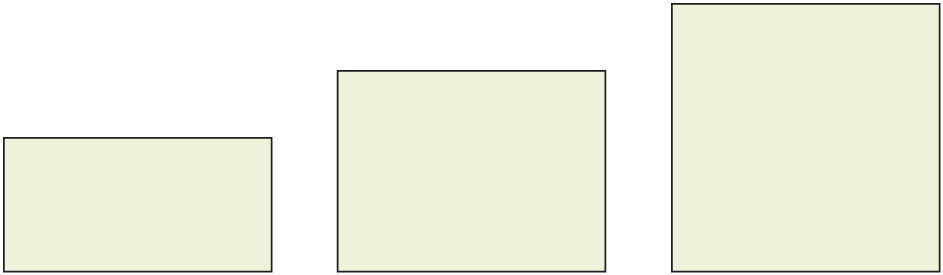

- 물음 1
- 물음 2
- 물음 3
- 물음 4
-
자를 사용하여 직사각형 가, 나, 다의 넓이를 구해 보세요.
 가 나 다직사각형 가로(㎝) 세로(㎝) 넓이(㎠) 가 428나 4312다 4416 -
직사각형의 넓이를 구하는 방법을 ‘가로’와 ‘세로’를 사용하여 식으로 나타내어 보세요.
직사각형의 넓이＝×가로세로 -
dddd
예삼각형 2개의 넓이를 각각 구한 다음 더해서 구합니다. -
직사각형의 넓이를 구하는 방법과 정사각형의 넓이를 구하는 방법의 같은 점과 다른 점을 이야기해 보세요.
예직각을 이루는 두 변의 길이를 곱하는 것이 같은 점입니다. 직각을 이루는 두 변의 길이가 정사각형은 같지만 직사각형은 다릅니다.